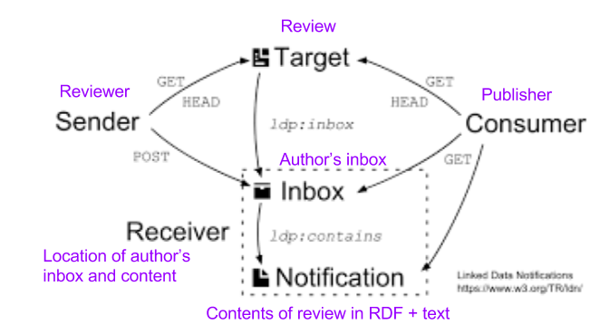

In recent years, the prevalence of the Internet and Semantic Web technologies has shifted the traditional scientific journal publishing framework towards the digital environment. In support of this, ontology suites like SPAR (The Semantic Publishing and Referencing) are built to support digital publishing. Additionally, new ways to represent fine-grained knowledge in the form of nanopublications, for example, have emerged. These fine-grained technologies facilitate the decomposition of traditional science articles in constituent machine-readable parts that are linked not only with one another, but also to other related fine-grained parts of knowledge on the Web following the Linked Data principles. But, these resulting digital artifacts of fine-grained knowledge are static objects that do not take dynamic processes, or scientific workflows, into account. And scientific workflows are important because they show how digital objects are produced and consumed. In this project, we enable the decentralized execution of scientific workflows of digital artifacts across platforms such that individual steps of single workflows can be distributed. By considering these scientific workflows, we can further find new dimensions with respect to the quality and impact of digital artifacts. In our preliminary results we have used Linked Data Notifications to demonstrate the feasibility of our approach.
Introduction/Motivation
Publishing is an important practice, not only in the world of science, but also in everyday life. Since a few centuries ago, when Gutenberg invented the publishing press, publishing has proved to be an effective means to share information and knowledge, making them more and more accessible to everyone throughout the centuries. In the recent years, with the pervasiveness of technology and the Internet, we changed not only the way we do science, but also how we perform and disseminate science. As such, scientific publishing became a more versatile and multifaceted process changing completely the initial paradigm of publishing towards a digital environment with new methods of electronic publication including scientific workflows, research protocols and standard operating procedures . Still, traditional article publishing remains an important part of the scientific process of one’s research, providing a means not only to spread knowledge and gain a certain validation from the scientific community, but also giving a sense of value to one's research by ensuring reproducibility among others. Especially in the sciences, moving towards a more digital environment and generating digital content seems to be more the rule and challenges the classic ways of publishing.
In this rather new digital publishing context, Linked Data is a framework that supports scientific publications by enabling the exchange, reuse and linking of data on the Web . While the Linked Data set of best practices to connect and publish structured data on the Web is not enough to enable the entire scientific publication process, it is an important layer that facilitates it. The Linked Data principles encourage using dereferenceable HTTP URIs for things like datasets, services, tools, etc. and including links to other URIs. The relations between these URIs should be in the form of links that can be dereferenced and provide access to the actual referenced resource. This way, scientific resources can be connected together and reused. Linked Data also supports provenance (meta-)information about the resources that are linked, thus giving a way to locate various versions of data and access information like ownership and copyright. In turn this would sustain reproducibility.
Reproducibility plays a crucial role in scientific research because it allows others to test, check and verify the validity of one’s claims and methods and it permits further collaboration and reuse of scientific discoveries. A scientific publication is a way to announce and describe a result of interest following research work that can benefit the scientific community as a whole. At the same time, it tries to prove that the claims exposed in the publication are true [3]. For this, it is very important to provide the means to publish these scientific contributions in an understandable way that allows for verification and thus facilitates reproducibility. Unfortunately, according to a recent study published in Nature [4], over 70% of the 1500 interrogated scientists admitted to have failed to reproduce the work of other researchers at some point in time. The FAIR principles for scientific information [5] can be key factors in guiding towards reproducible research. According to these, data should be (i) findable both for humans and machines; (ii) accessible on the long term; (iii) interoperable by the use of shared vocabularies, for example; and (iv) reusable for both humans and machines. And, following these guidelines should, in turn, support reproducibility.
As Mons [6] notices, an important problem with traditional articles and another hurdle in the way of reproducibility is the process of “Knowledge Burying”. That is all information is written and published in one bulk of text - the article - that contains the scientific hypotheses, arguments, methods and results. So, in order to extract knowledge from an article and have information in a structured form, additional methods like text mining need to be applied, thus resulting in a loss of knowledge. And, this is true for human readers as well: reading a traditional scientific article is an information retrieval task in itself, independent of the domain of science. Readers know how to recognize parts of the research by following standardized section headlines like “Introduction”, “Methods”, etc. and read or follow the parts they are most interested in.
To further support provenance and reproducibility in scientific publications, scientific workflows were introduced. A scientific workflow is a mechanism to specify and automate repetitive tasks for computational science or in silico science [7]. These scientific workflows are mostly published as digital artifacts that describe experiments and the additional materials needed to understand them [8]. A scientific workflow can be executed and reproduced because it contains a precise and executable description of a scientific procedure [9]. And, as research becomes more data driven, workflows are used in the specification of experiments that retrieve, integrate and analyze datasets using distributed resources [10].
State of the Art
In the last 25 years, scientific publishing has evolved from the form of a classical article to electronic publishing of scholarly journals. Accessing research publications without the restriction of subscriptions is the idea behind Open Access journals. These journals have been growing in number faster than traditional subscription journals [2]. But the debate of whether Open Access system is damaging the peer-review system and puts the quality of scientific journal publishing at risk was done in [3-8]. In [8] the authors mention that semantic publishing is inevitable and that it will happen in incremental steps [8] as it is already possible to publish data as RDF statements in the Linked Open Data Cloud [7]. Semantic Web technologies have launched a revolution in the field of scientific publishing and the idea is to create and facilitate an open access ecosystem where both content and metadata of scientific articles is accessible, together with formalized internal structures of the documents and components, enriched and with semantic connections to other related or similar documents. As such, this will support the integration and connection between knowledge bases that are built on Linked Data technologies, thus making the silos created by these individual knowledge bases obsolete [9, 10]. The FAIR principles come to support of this idea by providing guidelines not only for data, but also for all scholarly digital objects that produce and consume that data as algorithms and workflows, making them FAIR: Findable, Accessible, Interoperable, Reusable, thus useful on the long-term, for machines and humans as well [].
In the view of the prevalence of the Semantic Web, considerable research was done in enriching the meaning of a traditional article in the digital publishing environment, facilitating its automatic discovery, having access in a semantic way to and within the article and also being able to link to other related articles or other related parts of articles. Especially notable in this sense are the SPAR ontologies, the ontologies central to the task of semantic publishing, based on information models and vocabularies like Dublin Core to create basic metadata [3], PRISM, the Publishing Requirements for Industry Standard Metadata, metadata terms to describe published works [4], SKOS, the Simple Knowledge Organization System, RDFS model for knowledge organization systems like thesauri, taxonomies and classification systems [5]. SPAR (The Semantic Publishing and Referencing Ontologies) ontologies are a suite of ontologies that complement each other to have a high coverage over the various aspects involved in the semantic publishing. These ontologies are orthogonal to one another, for high coverage of complementary aspects. Their goal is to describe the different aspects of the scholarly publishing domain. The original set of SPAR was comprised of eight ontologies: FaBiO, CiTO, BiRO, C4O, RPO, PSO, PWO, DoCO, plus other four complementary ontologies: SCoRO, FRAPO, DataCite, BiDO [1-13]. All these techniques, methods and approaches can facilitate the scientific publishing domain and our research. For example, in [10], a proof of concept of an authoring workflow was described where reusable code, data and figures were integrated and embedded in a resulting PDF file, while exploring scientific articles using different facets e.g. different way of visualizing the digital collections by including more structured representations regarding the context and content of the article was done in [11].
As datasets, documents and, in general, knowledge is spread in the web of the Internet, where everything can be shared and reused and linked, decentralization is a key concept. Decentralization implies that there is no control of a central authority anymore, e.g. a publishing house, over the open content that exists on the Web. There is a lot of research in this area of computer science, but we will focus especially on technologies related to the field of digital scientific publishing. In the past, techniques to ensure the functioning of a secure and decentralized global file system over the Internet to entice collaborations have been described in [1, ..]. Then, the BitTorrent communication peer-to-peer file sharing protocol over the Internet to distribute and access data in the digital publishing environment was studied in [4, 5], while peer-to peer networks for RDF data were developed in [3] and a decentralized architecture to support nanopublications, scientific RDF snippets, was built in [2].
Quality assessment is important today because of the unstructured and amount of information on various social networks and Internet platforms. This information is in multiple formats, with no data about its provenance most of the time. Extensive research has been done in this field in the past years [1-11]. Information quality is seen as a multidimensional concept capturing notions like accessibility, accuracy, availability, completeness, currency, integrity, redundancy, reliability, timeliness, trustworthiness and usability. There are many proposals for information quality dimensions as described in [1, 8, 9], while in [6] 15 major quality dimensions have been identified that can be grouped in 4 categories. But, we can indicate the common dimensions emphasized in the past: accuracy, completeness and currency of information, but as [10] mentions, despite overlap in information quality dimensions, there is no consensus. And, because of this, the best one can do, as [3] mentions, is an estimate of quality. A crucial aspect lies in defining a good terminology regarding quality. According to [14], the terminology can be divided into three main categories: (i) quality dimension, e.g. availability of a dataset, (ii) quality metric, an indicator that has a score can be numeric or boolean and (iii) quality category, important to group dimensions into categories due to their large number; they have identified 23 quality dimensions with almost 100 metrics in total.
The notion of scientific workflows was researched extensively as a means to support scientific reproducibility [1-5]. A scientific workflow is a mechanism to specify and automate repetitive tasks for computational science or in silico science [3]. These scientific workflows are mostly published as digital artifacts that describe experiments and the additional materials needed to understand them [7]. A scientific workflow can be executed and reproduced because it contains a precise and executable description of a scientific procedure [6]. And, as research becomes more data driven, workflows are used in the specification of experiments that retrieve, integrate and analyze datasets using distributed resources [12]. Normally, scientific workflows are represented in the form of directed graphs where nodes represent local or remote tasks, actions or operations and edges represent the dependencies between them.
Problem Statement and Contributions
This research PhD project will be guided by a main research question. This will be the main focus of the thesis, but it will be answered using four sub-research questions. These sub-research questions will build on each other and, in the end, altogether provide an answer to the main research question:
How can scientific workflows that produce and consume digital artifacts be assessed, linked and decentrally executed across platforms, such that individual steps of a single workflow can be distributed?
Digital artifacts can be considered all objects or resources that belong to a scientific publication, such as text, datasets, code, multimedia objects, spreadsheets, reviews, figures, methods, protocols, and results. The scientific workflows refer to processes, actions or operations that produce or consume these digital artifacts like authoring, revising, editing, reviewing, commenting and annotating. A single scientific workflow can be composed of multiple steps and we argue that these various steps can be spread on various platforms like repositories, code bases and collaboration platforms. The innovative aspect of the project is that one platform would not be in full control of the complete workflow, but would provide the means to link to a workflow step as it is produced. Thus, a complete scientific workflow of a digital artifact would then be composed of these workflow steps that are distributed on different platforms. As such, the static digital objects will be linked to the dynamic processes that contain them. Another innovative aspect lies in the fact that new quality and impact measures of digital artifacts can be derived by considering the workflows that consume and produce them.
Every sub-research question captures a different aspect of the main research question:
How can we model the decentralized execution of workflows by using Linked Data principles and tools?
First, we would like to be able to model scientific workflows. For this, we will provide and build the necessary framework based on PROV-Pings and Linked Data Notifications (LDN), to enable notifications across platforms and tracking of provenance of various scientific workflows. We will use Linked Data principles like dereferenceable URIs using open standards like RDF to publish and link workflows. When workflows are modelled using the Linked Data principles and tools, we call them linkflows, the Linked Data version of workflows. To evaluate the model we will use a case study of at least 20 scientific articles together with their scientific workflows including reviewing and authoring. The innovative aspect is that workflow steps that are produced on various platforms are linked and then they are reused and consumed on other platforms.
How can we execute workflows that produce and consume digital artifacts?
This research question allows the creation and execution of the workflow steps modelled previously. Through a software prototype, users will be able to create workflows for a selected corpora of digital artifacts, for example to generate a review. This software prototype will connect and enable linked workflows to flow across platforms and as such involve resources without involving the platform that contains a certain workflow step. This means, for example that the review that was created can be accessed by various interested parties, like online journal editors, who can consume it further by including the review in their own submission system. The innovative aspect that this sub-research question addresses is the same as in the first sub-research question, producing and linking workflows across platforms and consuming them on other platforms. The difference here is that the scientific workflows will be created in automated manner with a focus on workflow decentralization and the small granularity of digital artifacts.
How can users analyze digital artifacts and assess their quality and impact based on the linked workflows that produce and consume them?
In this research question we want to analyze the workflows in which digital artifacts were produced and consumed. The goal is to evaluate the quality and impact that these digital artifacts have based on the workflows they are part of. For this, we will build a prototype of a user interface makes visible the connection between the digital artifact and the workflow that generated it. Next, we will develop metrics to measure the quality of a digital artifact based on the linked workflows that produced it. Moreover, analyzing the workflows that consume the digital artifact, we would be able to measure the impact this artifact has. The innovative aspects here are two-fold: first, tracking and visualizing the workflow steps and the digital artifacts that contain them and second, enabling new ways of measuring quality and impact of digital artifacts that do not rely only on the analysis of their provenance, but how they participate in the flow of dynamic processes, thus in linked workflows across platforms.
Can we use digital artifacts and the linked workflows that contain them to support inquires from experts and users alike?
This last sub-research question will bridge and blend all previous aspects together. An inquiry consists of searches of digital artifacts. The search results will contain not only the static object, the digital artifact, that is relevant for the inquiry, but also the workflow(s) that produce and consume that digital artifact, together with metrics like quality and impact. Moreover, users would be able to generate workflows for digital artifacts at the same time. So, a comment or a review could be added for a digital artifact, opening the execution of workflow steps for users. The innovative aspect would be two-fold: first, the inquiry responses will contain not only the corresponding digital artifact(s) of interest, but the linked workflows that contain them as well and second, users would be able to produce, consume and execute workflows for digital artifacts on the fly.
Each of the research questions will be addressed in the order they are described above, for 9 months each, thus spanning for the remaining 3 years of this PhD project. The work and results of the 4 research questions above will each be summarized in a scientific article.
Research Methodology and Approach
In order to answer the research questions from Section 3, we will move away from the idea of a traditional scientific article. We will consider digital artifacts as “universal entities” or objects that can be in the form of text, figures, datasets, code, presentation slides, multimedia objects, etc. as represented in Figure 1. Each of these digital artifacts can be represented in the form of a node in a network. As such, a classical scientific PDF article is comprised of various digital artifacts like text, figures, datasets, code, etc. that are inter-connected. These digital artifacts are considered first class citizens and all bear the same importance. Connections between the nodes of this network of digital artifacts are links, as in Web links.
Traditional scientific article represented as interconnected digital artifacts.
Moreover, the classical form of a scientific article, mainly the text and bibliography with the citations, etc. can be split into parts by using semantic web technologies and Linked Data tools. Ontologies can be used to break down the article into introduction, related work, methods, experiments, simulation, results, etc. and describe in a formal way these sections that can be later split even further into digital artifacts or considered digital artifacts in themselves. The combination of SPAR ontologies will be useful in for this step of research. If we consider digital artifacts linked together to form a scientific contribution like a classical scientific article, this network-like structure and granularity allows the connection of information that belongs to maybe different scientific contribution networks (different people, etc.) to be be linked together and the nodes representing digital artifacts can be mixed and matched, thus parts can be reused by means of linking. This way, parts are not plagiarized or copy-pasted, but reused by means of linking. If one links to a node in a network, it does not need to contain or copy the entire digital artifact, be it text, figures, etc. but just create a reference to it, as Figure 1 above illustrates.
The digital artifacts that connect together to form a scientific contribution undergo specific scientific workflows for their production and even when they are consumed by various systems, platforms and users. A scientific workflow involving a digital artifact represents the processes and actions that the digital artifacts undergo in science, like reviewing, commenting, annotating, etc. We will also use the notion of linking applied to scientific workflows. The linked workflows of a digital artifact are called linkflows. As such, either small steps of these workflows or entire workflows on a digital artifact are open and distributed in the sense that they can be produced on one platform and consumed on another, thus allowing the smooth flow of a workflow across platforms. This means, for example, that a review of a digital artifact can be produced on platform A, but platforms B and C can get notified of this review and consume or use it on these platforms. In the same way, a scientific workflow can contain multiple steps and these can be produced on different platforms, but linked together to form a coherent flow.
Considering this networked structure, when modifications are made in the network of a scientific contribution, notifications can be sent around about the changes as these propagate through the network. Here PROV-pings and Linked Data Notifications technologies will help in sending notifications to the interested parties. But, every node in the network, each digital artifact or workflow step, can be considered a fixed and immutable entity. This way provenance and versioning would be possible. Using Trusty URIs and the use of hashes can provide helpful in establishing and tracking the changes that a digital artifact goes through. Plus, various platforms, may refer to different versions of a digital artifact in their workflows.
In this project we will collaborate closely with two organizations: The Netherlands Sound and Vision and IOS Press. They both publish proprietary journals in various domains like the humanities (audio-visual history, science, medicine).
Use case 1: The Netherlands Institute of Sound and Vision
The Netherlands Institute of Sound and Vision is the biggest audio-visual cultural archive in the Netherlands having almost 70% of the Dutch audio-visual heritage under its tutelage. For this project, we will work closely with the two open access media historical e-journals: VIEW Journal of European Television History and Culture and Tijdschrift voor Mediageschiedenis. Both of them are bi-yearly online journals that use a double blind peer review procedure (if peer-reviewed) and use the open source Open Journal Systems as back-end solution. An Article Media plugin was developed to let authors submit video embeds with their article submissions, but articles are generally submitted in a Word file and available in HTML and PDF format; the PDF contains links to videos and sounds that can be embedded manually and these links are provided separately at submission time and added in the online article by editors. The institution uses a cloud-based repository solution to archive journal articles and to publish institute publications. A different way of publishing materials at the Sound and Vision Institute is by means of an online open source science series called Mind of the Universe. Here documentary episodes are made containing the latest developments in science and their explanations for the general public.
Use case 2: IOS Press
IOS Press is an independent publishing house that has about 100 journals (mainly focused on medicine, but also from scientific and technical domains) and around 130 books published annually. For this project we will consider two of the open access journals that are printed by IOS Press: one in the computer science domain, the Data Science Journal, and a journal from the medical domain, the Journal of Alzheimer's Disease Reports (JAD Reports). Both the Data Science Journal and JAD Reports are peer-reviewed and have very specialized editorial boards. The complex back-end submission system for these journals is an in-house solution based on Drupal. We decided to focus on these two different journals because they are open access journals that belong to various multidisciplinary domains. The Data Science Journal is a recent publication by IOS Press that focuses on all aspects related to scientific data from its creation, processing and analysis to visualization and re-use, independent of the field of research they are used in. JAD Reports contains open access articles and scientific communications from the Journal of Alzheimer’s Disease (JAD), a high-impact journal containing the latest research revolving around Alzheimer’s disease in biochemistry, neuroscience, medicine and health.
Throughout this project, we will implement, test and evaluate the linked workflows (linkflows) on the journals or datasets described in the use cases above. The diversity of the domains, ranging from audio-visual and multimedia to computer science and medicine would ensure a complex coverage of our project.
Preliminary or Intermediate Results
For answering the first sub-research question, we will model the workflow steps of a journal submission using the Linked Data Notifications (LDNs) protocol. For example, let`s consider the scientific workflow of reviewing: a digital artifact is submitted for review, then the editor sends it to reviewers that assess it and also determine if other reviewers are needed. Then, the digital artifact can be rejected, accepted or accepted based on modifications. In the end, if all modifications are accepted, the camera-ready version will be ready for publication. All these steps can be carried out on different platforms and servers, thus produced and consumed in different locations on the Web. For example, both IOS Press and the Netherlands Institute of Sound and Vision can subscribe to get the review notifications concerning a digital artifact and if an acceptance is given for the publishing of the digital artifact, they can include it in their publishing journals as well. As such, reviews can be consumed on any platform or by any system that wants to include it in its publishing workflow. This is illustrated in Figure 2.

How LDN maps to a part of the reviewing workflow.
In the LDN protocol, we need to separately identify the reviewers and the digital artifacts that they assess. When a reviewer generates a review for a digital artifact this review is stored on the Web, in a location that is publicly accessible by an URI. Next, platforms or systems that are interested to use or check any actions taken on that digital artifact, can subscribe to receive notifications regarding it when these arrive. And, not only can they receive notifications concerning an action taken regarding a digital artifact, but they can also use the data generated after a certain action is performed. In this case, use the review that one reviewer produced about a certain digital artifact. The possible content of a reviewing notification can be like the one in Listing 1.
HTTP/1.1 200 OK
Content-Type: text/turtle
@prefix schema: <http://schema.org/ > .
[ a schema:ReviewAction;
schema:agent [
a schema:Person;
schema:name "Alice"
];
schema:object <http://example.org/article/5 >
schema:result [
a schema:Review;
schema:reviewBody "This article is great!"
]
] .
Content of a reviewing notification.
For the sub-research questions 2 to 4 we will built models that rely on the previous answered research question(s). As such, in the beginning, we will decompose and model a “classic scientific” article into digital artifacts and their corresponding workflows manually as described above.
Evaluation Plan
Throughout the various stages of our research methodology we will perform various evaluations to assess the validity of our results. For this we will mostly consider the use cases provided by the Netherlands Sound and Vision and IOS Press. In the beginning, we will organize meetings and possibly organize various events to gather feedback and input for the approaches described in Section 3.
For the first sub-research question, where we want to model the decentralized execution of workflows, for a more complex evaluation we will use two different use cases: (i) we will manually model around 20 published scientific articles together with their scientific workflows; (ii) we will use the automated extraction of information from a bioinformatics repository already curated by experts, e.g. DisGeNET, “one of the largest and comprehensive repositories of human gene-disease associations currently available” [1]. It is important to consider different research fields and the two different approaches of modelling that need to be taken in these two use cases to make sure that the model we generate is general enough and also to notice the specific aspects that need to be addressed. First, we will use SPAR ontologies to decompose the article into different parts that are linked together. The level of granularity will depend on the domain and the way the article is written. For this, we will select articles from different research fields from the journals described in the two use cases from Section 4. In the end, we should obtain something similar with the diagram of Fig.1. Second, we will also extract and link information from the reviews and link it to the previously identified parts of the paper such that we would be able, for example, to construct the workflow that involves reviewing. For the evaluation we will conduct a qualitative analysis on the corpus of selected scientific papers and on the bioinformatics repository that will take into account factors including the use of English language, granularity and for use case (i) how well the article decomposition maps to the article content and structure, for example, how well the entire “text-block” article can be reconstructed by its interconnected digital artifacts as illustrated in Fig.1. In a similar way, for use case (ii) we will check how well the automated extraction of information was done in comparison with the initial “bulk of text” that contained unstructured information. Also, we will consider reviews content, comments and annotations and how these relate to the structured parts of the article or of the bioinformatics repository. In the case of articles we will observe, for example, if the review addresses mostly the “Methods” section and not others. In this quantitative analysis, we will also consider the agreement between reviews and/or comments.
For the second sub-research of how we can execute workflows that produce and consume digital artifacts, we will use the manually created model from the first step. The prototype that we will build will provide the software means to create a fully decentralized reviewing workflow. For evaluation purposes, we will conduct a controlled user experiment where we will ask participants to evaluate both the user interfaces, as well as the new way the reviews are conducted and how these reviewing workflows are generated by comparing it with how this process was carried on previously.
The third sub-research question addresses new ways of evaluating the quality and impact of a digital artifact based on the analysis of the workflows that produced and consumed the respective artifact. Here, we will develop new metrics for quality assessment of digital artifacts based on the scientific workflows that produce them, like reviewing. We will also develop a metrics for the impact that a digital artifact has based on the workflows that consume it. To evaluate these two metrics, we will first use nichesourcing. We will show experts digital artifacts and afterwards the workflows that produced them to see how valuable the background knowledge of a digital artifact is in the quality evaluation. At the same time, we will use existing data to import workflows and use it as a ground truth for generating the workflows. An example in this sense are existing datasets that have been manually curated and then text mined. Some useful datasets from which we can extract a ground truth can be biomedical datasets or repositories that contain both automated and manually curated data and annotations as well, e.g. DisGENet. Then, the quality metrics results will be compared against the ground truth.
For the fourth sub-research question, where we want to be able to provide answers to inquiries made by users, we will consider the development and implementation of a prototype that can return digital artifacts in response to user queries, together with the linked workflows that contain them. Furthermore, users would be able to create on the fly workflows for digital artifacts. For evaluation, we will use crowdsourcing to evaluate the software prototype in terms of the relevancy and the results that are returned as answers to user inquiries and also for rating the creation and execution of workflows on digital artifacts.
Conclusions
In this project we want to investigate new approaches in the digital environment of scientific publishing by combining Linked Data principles to address problems like “Knowledge Burying” of traditional articles. Furthermore, we want to provide a framework that supports scientific workflows for digital artifacts. As such, we aim to link and connect the static products of dynamic processes - digital artifacts - to the processes that produce and consume them. The main innovative aspect of this research is the fact that scientific workflows are executed decentrally and linked across platforms, such that individual steps of a single workflow can be distributed. Moreover, these scientific workflows will be used to create new quality dimensions of digital artifacts that take into consideration the dynamic processes that produce and consume them. Thus, by using new and existing Semantic Web technologies we will support the reproducibility of scientific research, the exchange, reuse and linking of all digital artifacts involved in scientific workflows.
Acknowledgments
We would like to thank Tobias Kuhn, Davide Ceolin, Lora Aroyo, Johan Oomen, Erwin Verbruggen, Maarten Frohlich and Stephanie Delbecque for helping in writing this research proposal, for their valuable and constant feedback and ideas.
Christian Bizer, Tom Heath, and Tim Berners-Lee. Linked Data - the story so far. In: International Journal on Semantic Web and Information 5.3 (2009), pp. 1-22. doi: 10.4018/jswis.2009081901.